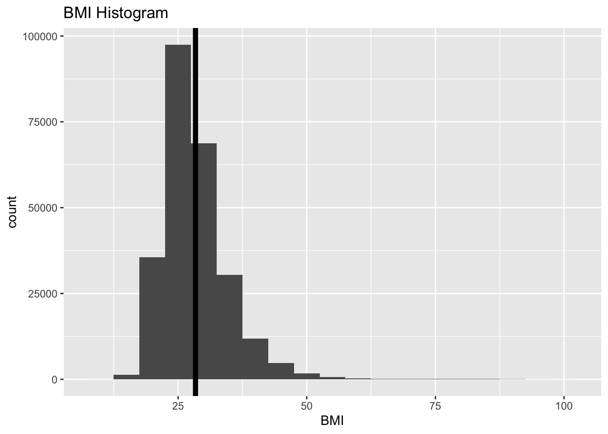
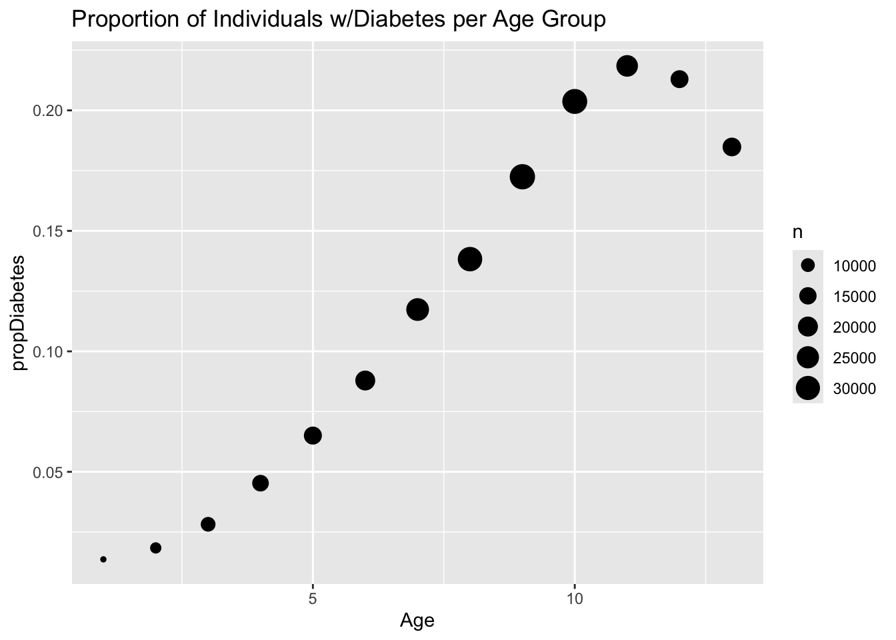
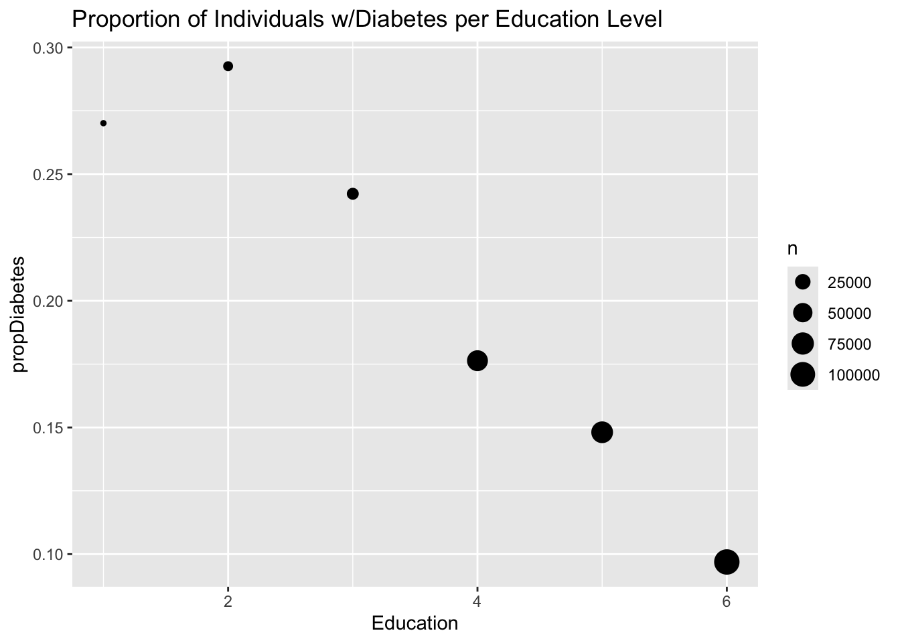
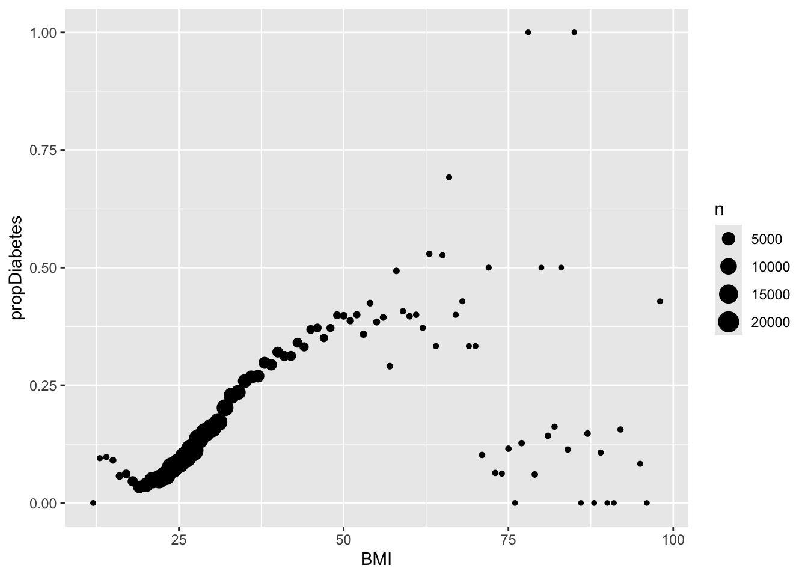

library(tidyverse)
library(ggplot2)EDA Quarto File
This is the initial Exploratory Data Analysis file which will examine the Diabetes Health Indicators data set.
Introduction to Data
The Behavioral Risk Factor Surveillance System (BRFSS) conducts yearly phone surveys in the United States. The surveys include questions for Americans about their health status and care choices. Our data set is a subset of the BRFSS survey calls from 2015 which focus on diabetes-related survey responses. Below is a brief description of each of the variables included in the data set.
Diabetes_binary: The dependent variable. A 0/1 associated with No/Yes response to “have you been told you have diabetes (or prediabetes)?
HighBP: Predictor indicating an individual has been told they have high blood pressure.
HighChol: Predictor indicating an individual has been told they have high cholesterol.
CholCheck: Cholesterol check has occurred within the past 5 years.
BMI: Body Mass Index; calculated as a ratio of weight to height.
Smoker: Response to question, “Have you smoked at least 100 cigarettes in your entire life?
Stroke: Predictor indicating an individual has been told they experienced a stroke.
HeartDiseaseorAttack: Individual has experienced heart disease or myocardial infarction.
PhysActivity: Respondent has engaged in physical activity in the past 30 days.
Fruits: Respondent consumes fruit once or more per day.
Veggies: Respondent consumes vegetables once or more per day.
HvyAlcoholConsump: More than 14 drinks per week for men & more than 7 drinks per week for women.
AnyHealthcare: Respondent has some kind of healtch coverage.
NoDocbcCost: Response to the question, “Was there a time in the past 12 months when you needed to see a doctor but could not because of cost?”
GenHlth: General scale (1-5) assessment of health
MentHlth: Response to the question, “How many days during the past 30 was your mental health not good?”
PhysHlth: Response to the question, “How many days during the past 30 was your physical health not good?”
DiffWalk: Response to the question, “Do you have serious difficulty walking or climbing stairs?”
Sex: Sex identification 0/1::female/male
Age: 13-level age category starting at 18 (i.e. level 1 is 18-24)
Education: Education scale 1-6 > 1: Never attended school or only kindergarten > 2: Grades 1-8 (elementary) > 3: Grades 9-11 (some high school) > 4: Grade 12 or GED (High school graduate) > 5: College 1 to 3 years (some college) > 6: College 4 years or more (college graduate)
Income: Income scale 1-8, ranging from 1 = less than 10,000 to 8 = 75,000 or more.
Exploratory Discussion
I will begin my data exploration by activiting the necessary packages
We will read in the data to a dataframe object, and purposefully identify the data type for each of the 22 variables.
diabetes <- read_csv("diabetes_binary_health_indicators_BRFSS2015.csv")Rows: 253680 Columns: 22
── Column specification ────────────────────────────────────────────────────────
Delimiter: ","
dbl (22): Diabetes_binary, HighBP, HighChol, CholCheck, BMI, Smoker, Stroke,...
ℹ Use `spec()` to retrieve the full column specification for this data.
ℹ Specify the column types or set `show_col_types = FALSE` to quiet this message.spec(diabetes)cols(
Diabetes_binary = col_double(),
HighBP = col_double(),
HighChol = col_double(),
CholCheck = col_double(),
BMI = col_double(),
Smoker = col_double(),
Stroke = col_double(),
HeartDiseaseorAttack = col_double(),
PhysActivity = col_double(),
Fruits = col_double(),
Veggies = col_double(),
HvyAlcoholConsump = col_double(),
AnyHealthcare = col_double(),
NoDocbcCost = col_double(),
GenHlth = col_double(),
MentHlth = col_double(),
PhysHlth = col_double(),
DiffWalk = col_double(),
Sex = col_double(),
Age = col_double(),
Education = col_double(),
Income = col_double()
)All data types are “doubles”, but for some analyses, we may need to convert the dependent variable “Diabetes_binary” to a factor.
Clean up data - before data manipulation (i.e. converting Diabetes_binary to a factor), I would like to identify if any rows include N/A values.
NA_vec <- c(seq_along(diabetes))
names(NA_vec) <- names(diabetes)
for (i in seq_along(diabetes)) {
NA_vec[i] <- sum(is.na(diabetes[i]))
}
NA_vec Diabetes_binary HighBP HighChol
0 0 0
CholCheck BMI Smoker
0 0 0
Stroke HeartDiseaseorAttack PhysActivity
0 0 0
Fruits Veggies HvyAlcoholConsump
0 0 0
AnyHealthcare NoDocbcCost GenHlth
0 0 0
MentHlth PhysHlth DiffWalk
0 0 0
Sex Age Education
0 0 0
Income
0 There are no NAs in any of the columns, so no omitting of rows for that particular reason is required.
One unique challenge or assessment of this data set is that all variables except for BMI are binary and/or classes. They are all double/numeric type columns with integers denoting a factored response to an associated question, whether it be a binary Yes/No, or a grouped category like education level (with levels 1-6) With that said, we can get som summary statistics and distribution information around the only continuous variable: BMI.
b <- ggplot(data = diabetes, aes(x=BMI))
b + geom_histogram(binwidth = 5) +
labs(title = "BMI Histogram") +
geom_vline(aes(xintercept = mean(BMI)),col='black',size=2)Warning: Using `size` aesthetic for lines was deprecated in ggplot2 3.4.0.
ℹ Please use `linewidth` instead.
Given the number of class variables (especially binary), in the data set, determining the mean value for each column will give a proportional insight to each variable. For example, ~14% of the observations are either diabetic or prediabetic, while only ~4% of the respondents had experienced a stroke, and ~44% were considered smokers.
(sum_stats <- data.frame(lapply(diabetes, FUN = mean))) Diabetes_binary HighBP HighChol CholCheck BMI Smoker Stroke
1 0.139333 0.4290011 0.4241209 0.9626695 28.38236 0.4431686 0.0405708
HeartDiseaseorAttack PhysActivity Fruits Veggies HvyAlcoholConsump
1 0.09418559 0.7565437 0.6342558 0.8114199 0.05619678
AnyHealthcare NoDocbcCost GenHlth MentHlth PhysHlth DiffWalk Sex
1 0.9510525 0.08417692 2.511392 3.184772 4.242081 0.1682237 0.4403422
Age Education Income
1 8.032119 5.050434 6.053875Data Manipulation
To support the model development, I will convert the target variable: Diabetes_binary to a factor column with status of “No” and “Yes”. Yes indicates someone who is either prediabetic or diabetic.
diab2 <- diabetes |>
mutate(DiabetesStatus =
ifelse(Diabetes_binary == 0, "No",
ifelse(Diabetes_binary == 1, "Yes",
"ERROR")))
diab2$DiabetesStatus <- as.factor(diab2$DiabetesStatus)
head(diab2)# A tibble: 6 × 23
Diabetes_binary HighBP HighChol CholCheck BMI Smoker Stroke
<dbl> <dbl> <dbl> <dbl> <dbl> <dbl> <dbl>
1 0 1 1 1 40 1 0
2 0 0 0 0 25 1 0
3 0 1 1 1 28 0 0
4 0 1 0 1 27 0 0
5 0 1 1 1 24 0 0
6 0 1 1 1 25 1 0
# ℹ 16 more variables: HeartDiseaseorAttack <dbl>, PhysActivity <dbl>,
# Fruits <dbl>, Veggies <dbl>, HvyAlcoholConsump <dbl>, AnyHealthcare <dbl>,
# NoDocbcCost <dbl>, GenHlth <dbl>, MentHlth <dbl>, PhysHlth <dbl>,
# DiffWalk <dbl>, Sex <dbl>, Age <dbl>, Education <dbl>, Income <dbl>,
# DiabetesStatus <fct>It can be somewhat difficult to visualize class variables. For several of the variables in the data set, I will plot the proportion of Diabetes incidence against each factor level, including sizing of each plot point based on the count of factor level occurrences. Plots were generated for Age, Income, and Education class variables.
distSum <- diab2 |>
group_by(Age) |>
summarize(propDiabetes = mean(Diabetes_binary),
n = n()) |>
ungroup()
ggplot(distSum, aes(x=Age, y=propDiabetes)) +
geom_point(stat = "identity", aes(size = n)) +
labs(title = "Proportion of Individuals w/Diabetes per Age Group")
Inc_Prop <- diab2 |>
group_by(Income) |>
summarize(propDiabetes = mean(Diabetes_binary),
n = n()) |>
ungroup()
ggplot(Inc_Prop, aes(x=Income, y=propDiabetes)) +
geom_point(stat = "identity", aes(size = n)) +
labs(title = "Proportion of Individuals w/Diabetes per Income Level")Inc_Prop <- diab2 |>
group_by(Education) |>
summarize(propDiabetes = mean(Diabetes_binary),
n = n()) |>
ungroup()
ggplot(Inc_Prop, aes(x=Education, y=propDiabetes)) +
geom_point(stat = "identity", aes(size = n)) +
labs(title = "Proportion of Individuals w/Diabetes per Education Level")
Using a similar approach as above, a scatterplot-like graph is generated to evaluate BMI against diabetes incidence proportion. As with the plots above, the goal is to identify visually if there is a possible relationship between several class variables and the proportion of affirmative diabetes responses prior to generating fit models for the data set.
BMI_Prop <- diab2 |>
group_by(BMI) |>
summarize(propDiabetes = mean(Diabetes_binary),
n = n()) |>
ungroup()
ggplot(BMI_Prop, aes(x=BMI, y=propDiabetes)) +
geom_point(stat = "identity", aes(size = n))
Prior to beginning the modeling activities for this data set, I’ll save the manipulated diabetes dataset such that it can be read-in for modeling.
saveRDS(diab2, file = "diab2.rds")